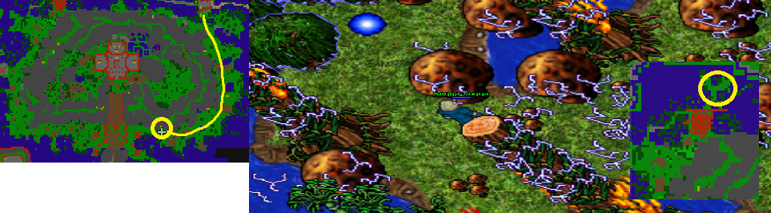
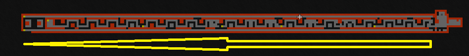
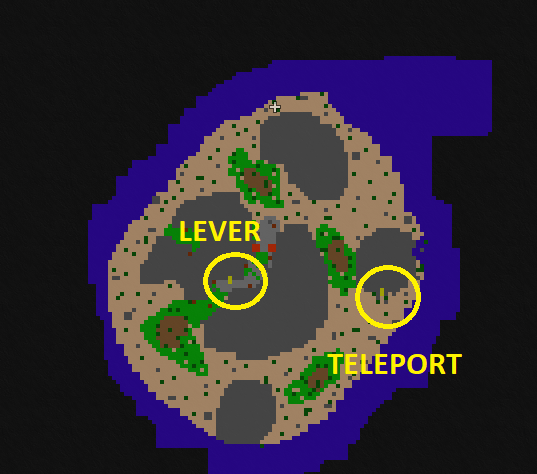
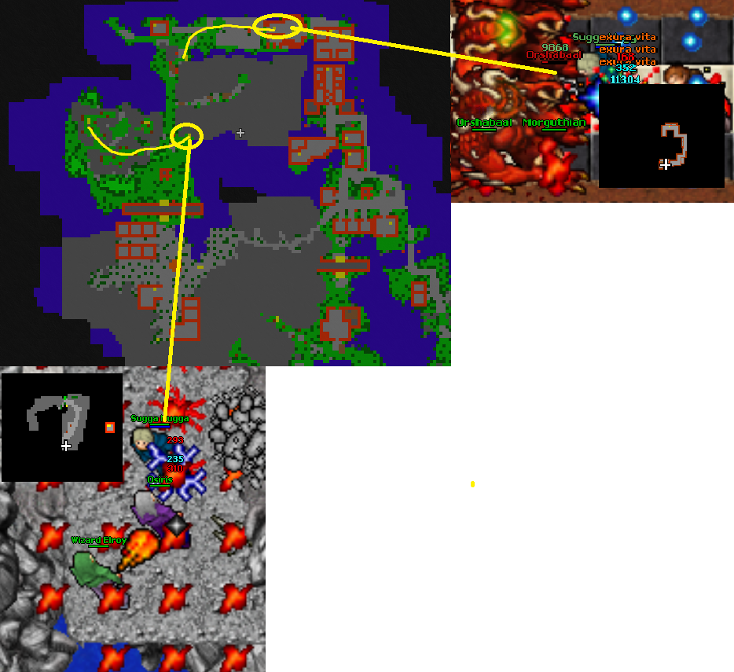
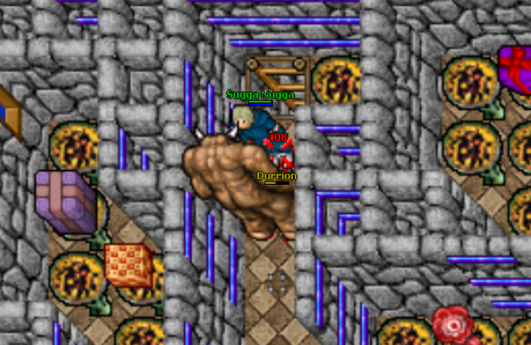
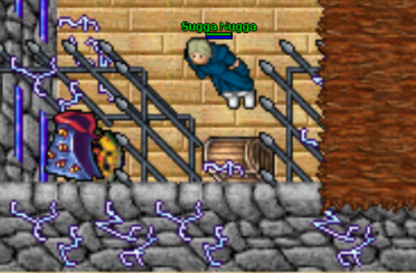
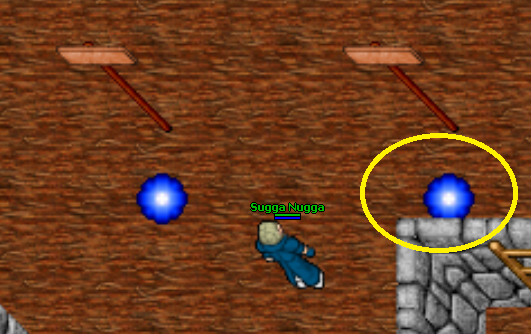

Lands of Mysticon
Recommended level: solo 700 - 900, duo 500-600
Rewards:
Butterfly conservation kit 3
Botanist’s container 3
Cyclip robe
Oceanic lizard shield checkpoint
Getting to Mysticon
From Fallen gods magician’s creek go South and from behemoths go up. Go past the Ashtars and more North to the Succubus bridge. Go over the bridge and go same way as one of the levers to the inner fallen gods. Find surphyre and go upstairs, Don’t fall into the pitholes. Go through the hidden passage by the mountain and then by the dark wizard, go down to the pithole.
Follow the road to the end as you find some doors in strange places and Wizard of visualis at the end.

Lands of Mysticon area 1
Here starts your little adventure. Find 3 mechanical bosses and kill them. If you let any other monster than player to hit the final blow, you will need to wait that boss to respawn again.
First up: head straight East and on your way, kill Wizard of Ochon on the bridge. You get teleported to the East side desert area, in a small room. Go downstairs and go West. Now before you continue your journey, I recommend to grab a checkpoint. It’s to the West where you can walk on water. Easiest way to go there is by map clicking there.
After taking the checkpoint, go South to the rope hole. Go up and then West stairs up and straight down. There’s a Hydrocon boss, kill it and continue your journey back up.
Now you need to kill last boss that will open most of the places here: Deserticus Draconis. Go East desert from the Hydrocon boss and kill it. Now you can go take those task items you are going to need for the oceanic lizard shield upgrade quest.
Botanist’s container 3: From the South desert area, go near the ladders to the North and go downstairs. Follow the path to the end and you’ll find the chest there.
Butterfly conservation kit 3: Go back to the starting point of Mysticon and go South from there to the stairs. Follow the road to the South-West, there’s no bars anymore. Find a teleport with Terratron boss, kill it and go past it. Here in the desert area, the chest is to the West with the teleport back to the Mysticon area.

Now you are ready to continue the quest. Go to the bridge where you killed Wizard of Ochon and go North. There’s and Elf arcanist boss called Elfenix. Kill it and all those bars will be reseted and no one else can enter after you, but just kill the bosses again.
Go up to the mountain with Demons, Orshabaals and other monsters. There’s a lever you need to pull before you can continue.

After pulling the lever, go back down and then behind the mountain from North.

Now you’re at the old checkpoint, that is no longer active. You need to get past all the monsters here. You can also kill either Tixukan (polar bear) or Rixukan to get on the North side 1 sqm area. That is recommended since there’s less monsters and you’ll get over this place alot faster.

At the next area, you need to pull 1 lever to get that rock out of the way. Go South-West and stairs up with some easy monsters. There’s Canopus Doradus near the lever, kill it or skip it and pull the lever. Then go East and hop into the teleporter.

Now you’re at the last area. You’ll get teleported to a small snowy area but it’ll change fast to sunny place. Alot of demons and some morgaroths on your way to the first of 4 bosses you need to kill. Head straight West through the mountain and go down with the ladders. Go on the other side and find Guardian Overlord at the end of the city.

You’ll get teleported to another place as you kill this. Find your way out of the mountain and go East side mountain. Go as far upstairs as you can and you’ll find Wizard Elroy there.
After killing Elroy, go back and head North. There’s ladders down, go full South and there’s Morguthian boss. Kill it and go back up.

For the last boss, head far to the East and go past the city like place and go South. There’s Pandarius boss at the end. After that you can enter the quest area to the North.

Kill Durrion, that’ll reset all the stones back in place behind you and then you can grab your reward. NOTE! Remember to take oceanic lizard shield checkpoint from the teleport!

Remember to grab cyclip robe

Go on the right side teleport to get the checkpoint.
